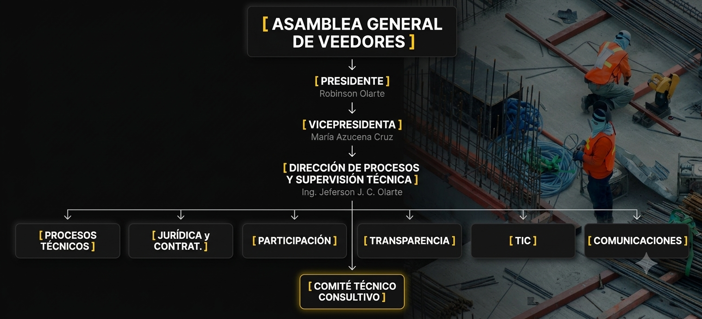

Organigrama Institucional
Veeduría Técnica Ciudadana (VTC)
Nivel Directivo
ROBINSON OLARTE
Presidente
Fundador de la Veeduría Técnica Ciudadana
Responsable de:
- Representación institucional.
- Direccionamiento estratégico.
- Relaciones institucionales.
- Coordinación general de la veeduría.
- Fortalecimiento de la participación ciudadana.
- Gestión de alianzas y cooperación.
MARÍA AZUCENA CRUZ
Vicepresidenta
Fundadora de la Veeduría Técnica Ciudadana
Responsable de:
- Apoyo a la dirección institucional.
- Coordinación comunitaria.
- Participación ciudadana.
- Seguimiento a iniciativas sociales.
- Relacionamiento con organizaciones ciudadanas.
Nivel Ejecutivo
ING. JEFERSON JEAN CARLO OLARTE LANCHEROS
Director de Procesos y Supervisión Técnica
Ingeniero Civil – M.P. No. 151037-0602160 STD
Responsable de:
- Dirección técnica institucional.
- Supervisión técnica de proyectos.
- Planeación de visitas de campo.
- Elaboración de informes técnicos.
- Coordinación de procesos de seguimiento.
- Control de calidad técnica documental.
- Gestión de observaciones y hallazgos.
Oficinas y Departamentos
OFICINA DE PROCESOS TÉCNICOS
Responsable de:
- Seguimiento de obras públicas.
- Inspecciones técnicas.
- Verificación de cantidades de obra.
- Seguimiento de personal contractual.
- Control de cronogramas.
- Elaboración de conceptos técnicos.
Áreas de seguimiento:
- Infraestructura vial.
- Infraestructura educativa.
- Infraestructura hospitalaria.
- Infraestructura deportiva.
- Infraestructura institucional.
- Infraestructura cultural.
- Infraestructura turística.
- Servicios públicos.
OFICINA DE PROCESOS JURÍDICOS Y CONTRACTUALES
Responsable de:
- Derechos de petición.
- Seguimiento contractual.
- Solicitudes de información.
- Revisión normativa.
- Seguimiento a SECOP.
- Control de obligaciones contractuales.
- Vigilancia de procesos de contratación estatal.
OFICINA DE PARTICIPACIÓN CIUDADANA Y CONTROL SOCIAL
Responsable de:
- Atención a la ciudadanía.
- Recepción de denuncias.
- Capacitación comunitaria.
- Acompañamiento a organizaciones sociales.
- Promoción del control social.
OFICINA DE TRANSPARENCIA Y ACCESO A LA INFORMACIÓN
Responsable de:
- Gestión documental.
- Acceso a la información pública.
- Publicación de informes.
- Seguimiento Ley 1712 de 2014.
- Consolidación de bases de datos.
OFICINA DE COMUNICACIONES Y MEDIOS
Responsable de:
- Canal de YouTube "Vigilando Ando".
- Producción audiovisual.
- Registro fotográfico.
- Comunicaciones institucionales.
- Redes sociales.
- Difusión de informes y resultados.
DEPARTAMENTO TIC
Responsable de:
- Plataforma web VTC.
- Sistemas de información.
- Bases de datos.
- Soporte tecnológico.
- Seguridad informática.
- Automatización de procesos.
Comité Técnico Consultivo
Integrado por profesionales aliados en:
- Ingeniería Civil.
- Arquitectura.
- Ingeniería Eléctrica.
- Ingeniería Ambiental.
- Seguridad y Salud en el Trabajo.
- Derecho Administrativo.
- Contratación Estatal.
- Interventoría.
- Auditoría y Control.
Estructura Jerárquica

← Volver a la página principal